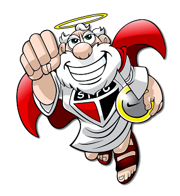

A fundação
São Paulo Futebol Clube. O tricolor paulista surgiu através da fusão de dois antigos clubes: o Paulistano, grande campeão no início do século XX e a Associação Atlética das Palmeiras, que se uniram em 1930 dando origem ao Clube Athlético São Paulo ou São Paulo da Floresta, como muitos o chamavam. No seu segundo ano de existência, o clube se consagrou campeão paulista. O São Paulo já era um gigante do futebol local, só que nem mesmo o clube imaginava onde iria chegar.
Em 1935, o clube teve uma nova refundação. Isso ocorreu devido a uma crise política dentro da instituição. Alguns dirigentes não estavam contentes com a situação do futebol no país, tomando a atitude de sair do futebol e se unir com o Clube Regatas Tietê. Só que o futebol no tricolor resistiu, e em 4 de junho de 1935 alguns sócios refundaram o que foi chamado de Clube Atlético São Paulo, tornando-se posteriormente o grande São Paulo Futebol Clube.
Surge então um gigante no futebol, com a tradição de colecionar títulos. É, essa camisa pesa, amigos, e como diz o próprio hino: "Dentre os grandes és o primeiro!"
O Mascote

á a mascote do São Paulo é um velhinho muito simpático de barbas brancas chamado de Santo Paulo (para não ter confusão com o nome do clube). A mascote foi dada ao clube devido a cartuns publicados no jornal A Gazeta por volta dos anos de 1930 e 1940.